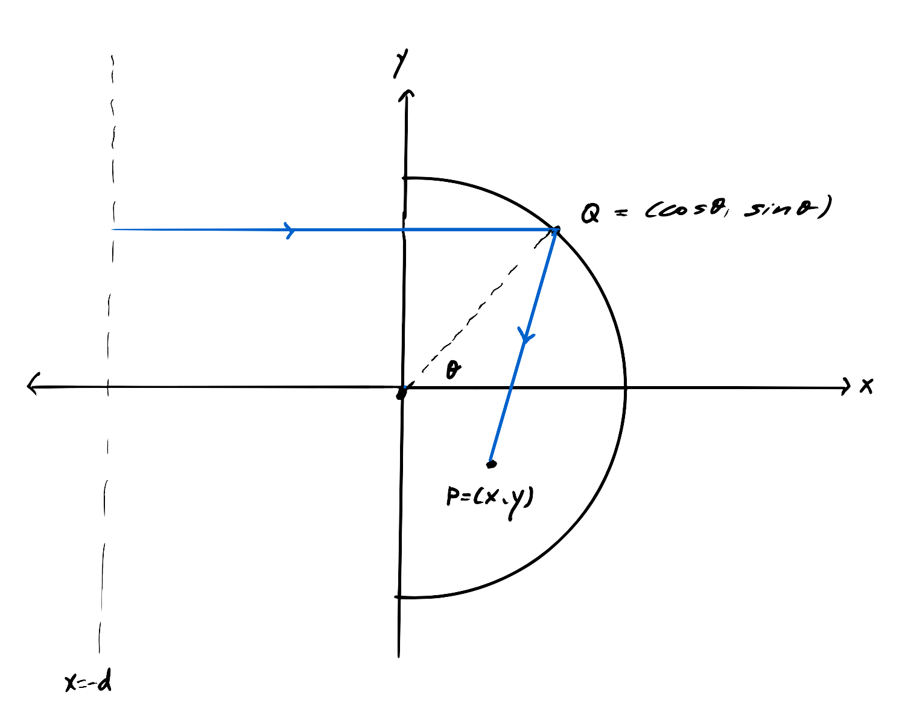
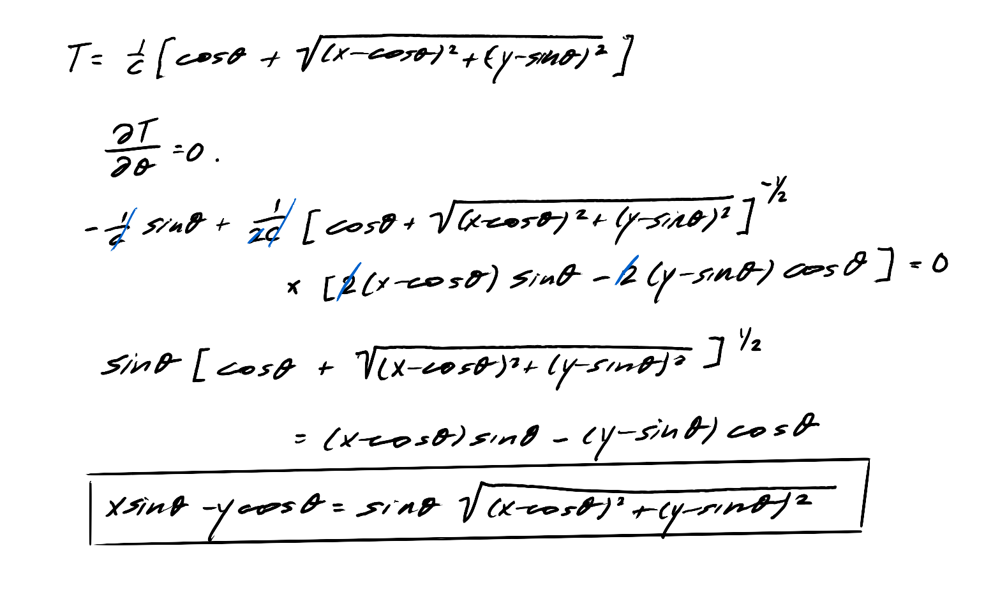

When sunlight reflects off of the inner surface of a coffee cup, it sears a curved edge of bright light into it.
In optics, this is called a caustic, deriving from the Greek word "kaustikos," burning. The shape the light traces is a mathematical object called a cardioid. It looks like a heart, or the face of a barn owl, or the wings of a great bird... tbh it also looks like a butt though. All grand things to have in your cup of coffee.
In section I, I will derive why the light takes on this curve using Fermat's Principle, a particular form of one of the most fundamental principles in classical physics, the principle of least action. In section II, I will derive it using a branch of mathematics called catastrophe theory. In section III, I will show the isomorphism between the two methods.
I. Principle of Least Action
To derive this the most intuitive way, all we need to do is consider how each light ray that enters the coffee cup will reflect, and then find the set of points that consist of their points of intersection. The curve that these points trace will be the caustic, as points where light rays intersect will have higher intensity.
For this particular caustic, we are assuming that the light source is the sun. Then we can treat the incoming light rays as being approximately parallel when they approach the coffee cup. Let us consider an arbitrary light ray, which reflects off of the cup at point $Q$ and passes through a point $P$ in the interior of the cup. If we say that the cup is a unit circle and place the origin at the center of the cup, we can label the coordinates of P and Q as in the image below (I have drawn just the relevant semicircle of the cup):

I have drawn the light rays as straight lines here, but this is in general not true, because of
Fermat's Principle: light will travel the whatever path that makes it so that the value
$$T = \frac{1}{c} \int n(s) \ ds,$$
where $s$ is the path and $n(s)$ is the index of refraction as a function of the path, is minimized.
But if we say that $n(s)$ is a constant, then it turns out the path of least time between two points is the a straight line between them. I won't derive that here but I'm you should be able to find it pretty easily if you search up Fermat's principle. Now I want to find the path length from the source of light to point $Q$. [more stuff]. For reasons that will be become clear later I want to call the path length
$$ g(x, y, \theta) = cos \theta + \sqrt{(x - cos \theta)^2 + (y-sin \theta)^2}.$$
This is the path length from a point $Q$ on the rim of the cup to literally any arbitrary point $P$. The associated time of travel is
$$ T = \frac{1}{c} g(x, y, \theta). $$
We know that the coffee cup is a reflecting surface, so we only care about point $P$s that are inside the cup (inside the semicircle). To minimize $T$, we take the derivative with respect to $\theta.$
